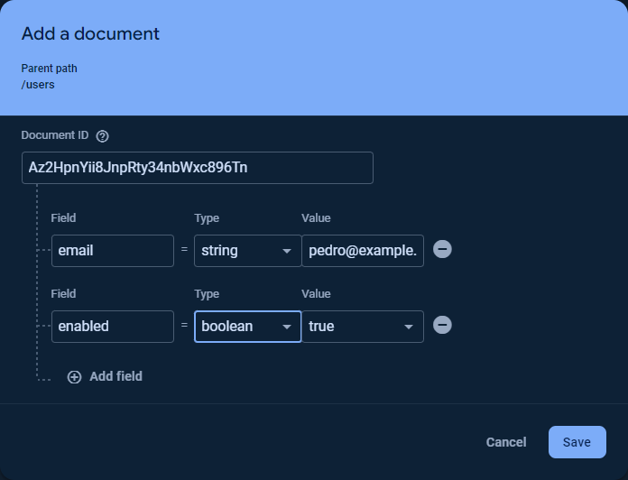

ITM 101 Final Project
(Min-Max Inventory System)
Part 2
Scenario
The Min-Max Inventory System that you created and deployed last time is using development security rules. This means that anyone can view, edit, and delete the data in your Firestore database. Your boss has asked you to change the Min-Max Inventory System so that it authenticates users and only allows authenticated users with the correct permissions to view, edit, and delete the data.
Steps
Do the following:
- Use ChatGPT to learn about Google Firebase authentication and Firestore security rules. Start a new chat with ChatGPT, and give the following prompts to ChatGPT. Use ChatGPT as a learning assistant. Read it’s answers, and ask it other questions that will help you understand Firebase authentication and Firestore security rules.
- What is authentication?
- Does Google Web Services include an authentication service?
- How do I enable Google authentication for a Firebase project?
- What is the purpose of Firestore security rules?
- Use the Firebase Console in your browser and open your min-max-inventory project.
- Still using the Firebase Console, enable Google authentication for your project by doing the following:
- In the navigation frame on the left-hand side, expand the “Build” item.Click “Authentication” in the navigation frame.Click the “Get started” button.Click the “Sign-in Method” tab near the top of your browser window.Click “Google” from the list of “Additional providers”.Click the “Enable” switch.Change the “Publich-facing name” for your project to “min-max-inventory”.Choose a support email from the drop-down list.Click the “Save” button.
- Using your browser, download the filestore.rules file and save it into the the
min_max_invfolder that you created last week. - Using your browser, download the following two files and save them into the
min_max_inv/publicfolder that thefirebase init hostingcommand created last week. Downloading these two files will replace two files that you downloaded last week. - In the
min_max_inv.jsfile that you downloaded in the previous step, replace thefirebaseConfigdictionary at line 99 with code from the Firebase Console. - In VS Code, open a new terminal and execute the following command:
firebase deploy --only "firestore,hosting"
- Look in the VS Code terminal below the
fireabase deploycommand for the URL where the command sent your files. The URL will be similar to this:https://min-max-inventory-DIGITS.web.app
- Copy the URL from the VS Code terminal and open it in a new tab in your browser. Opening the URL in your browser should cause your browser to open a pop-up window and request sign in credentials from Google. If your browser blocks the pop-up window, click the pop-up blocked icon and enable pop-up windows for your Min-Max Inventory app and then reload your app in your browser.
- If you’re not already signed into your Google account, you must sign into one. After you sign in, your Min-Max Inventory app will display your name, email address, and application user ID at the top of the application window.
- Using the Firebase Console in your browser, add a new collection named “users” to your Firestore database.
- Still using the Firebase Console, add a document to the “users” collection. For the “Document ID” copy and paste your application user ID which will be at the top of your Min-Max Inventory app window. Add two fields named “email” and “enabled” to the document. The “enabled” field must by of type boolean as shown in the following screenshot: 
- Refresh (reload) your Min-Max Inventory system in your browser. All of the tabs (Suppliers, Products, Receiving, and Outgoing) should display data from your Firestore database. If any of the tabs don’t contain data, you may have created the user document incorrectly in the previous step.
- Using your browser, test your Min-Max Inventory system thoroughly by doing the following:
- Look at each of the five tabs and verify that they all show the correct data from your Firestore database.
- In the Receiving tab, enter numbers in the text boxes, press the Submit button, and verify that the corresponding Current Quantities change as they should.
- In the Outgoing tab, enter numbers in the text boxes, press the Submit button, and verify that the corresponding Current Quantities change as they should.
Stretch Challenges (Complete one for 5 points)
You can learn about creating, writing, securing, testing, and depolying applications in the Internet Cloud by doing any of the following.
- Make it possible for some users to only read data in the Firestore database and for other users to read and write. You could do this by
- Changing the structure of user documents in the Firestore database from
{email: "pedro@example.com", enabled: true}to{email: "pedro@example.com", canRead: true, canWrite: false} - Adding more users to your Firestore database, some with
canRead:trueandcanWrite:falseand others with bothcanReadandcanWriteset totrue - In the
firestore.rulesfile, replacing theuserHasPermissionfunction with a function nameduserCanReadthat checks thecanReaddocument field and using theuserCanReadfunction inallow readparts of thematchrules. - In the
firestore.rulesfile, adding auserCanWritefunction that checks thecanWritedocument field and using theuserCanWritefunction in theallow writeparts of thematchrules. - Deploying your modified
firestore.rulesby executing this command in a VS Code terminal:firebase deploy --only "firestore,hosting"
- Change your application’s favicon () or the Min Max icon (). Ask ChatGPT the following:
- What is an svg file?
- What are some free popular computer programs for creating svg files?
- What size should a web application’s favicon be?
firebase deploy --only "firestore,hosting"
- Change the background color, font color, font family, or font size in your Min-Max Inventory app. This will require you to change and deploy your
min_max_inv.cssfile. Ask ChatGPT the following:- What is the purpose of a css file in a web application?
- What is a selector in a css file?
- Please teach me about simple css selectors.
- What is a css variable and how do I create and use one in a css file?
- Please write a css rule to change to backround color of the body of an HTML document.
- Add a tab to your application that lets a user view orders in a tab named “Orders” that is like the “Suppliers” tab. This will require you to add code to both the
index.htmlandmin_max_inv.jsfiles. Examine your existingindex.htmlfile and find the HTML tags that create each tab and corresponding section. Add a new tab and section and test your changedindex.htmlfile. Alternatively, you could give ChatGPT the HTML code for the Suppliers tab and ask it to create code for an Orders tab that is similar to the Suppliers code. After you change and test yourindex.htmlfile, add code to yourmin_max_inv.jsfile for the “Orders” tab.